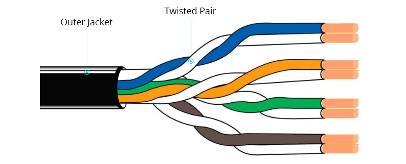

Análisis de Medios de Transmisión Guiados
Estudio de los canales físicos y los factores limitantes de la transmisión de datos, tales como la atenuación, la impedancia característica y las pérdidas por retorno.

Cables de Par Trenzado
Formado por conductores de cobre multifilar o sólido aislados por una capa de polietileno de alta densidad. El trenzado helicoidal balancea las líneas físicas de transmisión; los hilos transportan voltajes de igual magnitud pero polaridad opuesta. Este diseño aprovecha el principio de cancelación electromagnética para anular el ruido radiado y mitigar la diafonía (crosstalk), medida técnicamente mediante parámetros como NEXT (Near-End Crosstalk) y FEXT (Far-End Crosstalk).
Características Físicas y Eléctricas:
- Impedancia Característica: Estándar de 100 Ohmios (±15%) constante a lo largo de las frecuencias operativas del cable.
- Calibre del Conductor: Medido bajo la norma AWG (American Wire Gauge), típicamente entre 22 AWG y 24 AWG. A menor número AWG, mayor grosor del hilo de cobre y menor resistencia óhmica.
- Esquemas de Blindaje Estructurado:
• U/UTP: Par trenzado totalmente sin blindaje; flexible pero vulnerable a EMI externa.
• F/UTP: Blindaje global de lámina de aluminio que envuelve los 4 pares; reduce la interferencia externa (Alien Crosstalk).
• S/FTP: Blindaje trenzado de cobre exterior y blindaje de aluminio independiente para cada par; máxima protección para altas frecuencias. - Geometría de Conectorización: Interfaces estandarizadas RJ-45 que requieren el mantenimiento estricto del destrenzado por debajo de los 13 mm en la terminación para no degradar la categoría del canal.
• T568A: Pinout ordenado por: Blanco/Verde, Verde, Blanco/Naranja, Azul, Blanco/Azul, Naranja, Blanco/Marrón, Marrón.
• T568B: Pinout ordenado por: Blanco/Naranja, Naranja, Blanco/Verde, Azul, Blanco/Azul, Verde, Blanco/Marrón, Marrón.

Medios de Fibra Óptica
Tecnología basada en la propagación de ondas electromagnéticas en el espectro infrarrojo (longitudes de onda de 850 nm a 1550 nm). Consiste en un filamento de vidrio de sílice puro donde la luz queda confinada gracias a la Ley de Snell y el fenómeno de la Reflexión Interna Total. Al no utilizar flujos de electrones, no genera bucles de tierra, es inmune a las descargas atmosféricas y ofrece aislamiento eléctrico completo.
Características Ópticas y Estructurales:
- Atenuación Lineal Mínima: Pérdidas extremadamente bajas medidas en Decibelios por Kilómetro (dB/km). En fibra monomodo a 1550 nm, la atenuación puede descender hasta 0.2 dB/km, permitiendo tramos kilométricos sin repetidores.
- Ventanas de Transmisión: Regiones ópticas optimizadas donde el vidrio presenta menor absorción: 1° Ventana (850 nm), 2° Ventana (1310 nm) y 3° Ventana (1550 nm).
- Fibra Monomodo (SMF - Single Mode Fiber): Diámetro del núcleo de ~9 micrones. Permite la propagación de un único modo de luz lineal. Elimina por completo la dispersión modal, lo que la convierte en la opción estándar para redes WAN y telecomunicaciones transoceánicas.
- Fibra Multimodo (MMF - Multi Mode Fiber): Diámetro del núcleo de 50 o 62.5 micrones. Permite que múltiples rayos de luz viajen rebotando en diferentes ángulos. Limitada por la dispersión modal a distancias cortas (redes LAN, Edificios, Data Centers). Se clasifica en índices OM1, OM2, OM3, OM4 y OM5 basados en su ancho de banda modal.
• UPC (Ultra Physical Contact - Azul): Pulido plano. Pérdida por retorno de ≈ -50 dB. Utilizado en sistemas de datos estándar.
• APC (Angled Physical Contact - Verde): Pulido con un ángulo de 8°. Desvía las reflexiones hacia la cubierta. Pérdida por retorno de ≈ -60 dB. Crítico en conexiones GPON y video analógico.
Matriz Extensa de Especificaciones de Rendimiento
Tabla de ingeniería comparando anchos de banda, frecuencias operativas, codificación física y distancias límite de diseño.
| Categoría / Estándar | Frecuencia (Ancho de Banda) | Velocidad Máxima de Transmisión | Distancia de Canal Límite | Esquema de Codificación Física | Tipo de Blindaje / Conector |
|---|---|---|---|---|---|
| Cat 5e | 100 MHz | 1 Gbps | 100 Metros | 4D-PAM5 (Pulse Amplitude Modulation) | U/UTP — Conector RJ-45 |
| Cat 6 | 250 MHz | 10 Gbps | 55 Metros (a 10 Gbps) / 100m (a 1 Gbps) | PAM-16 (16 niveles de modulación) | U/UTP o F/UTP (Incluye divisor interno) |
| Cat 6a | 500 MHz | 10 Gbps | 100 Metros | DSQ128 (Double Square 128) | F/UTP o S/FTP — Conector RJ-45 blindado |
| Cat 7 | 600 MHz | 10 Gbps | 100 Metros | Codificación exclusiva Ethernet | S/FTP — Conector GG45 / TERA |
| Cat 8.1 / 8.2 | 2000 MHz | 25 Gbps / 40 Gbps | 30 Metros (Canal Corto para Data Centers) | PAM-16 sobre frecuencias de GHz | S/FTP — RJ-45 (8.1) o TERA/GG45 (8.2) |
| Fibra OM4 (Multimodo) | 4700 MHz·km (Ancho de Banda Modal) | 40 Gbps / 100 Gbps | 150 Metros / 100 Metros | NRZ / PAM-4 mediante VCSEL Láser | Núcleo 50/125 µm — Conectores LC / MPO |
| Fibra OS2 (Monomodo) | Ilimitado (Sujeto solo a dispersión cromática) | > 400 Gbps (Multiplexación WDM) | Hasta 40 Kilómetros (Sin amplificación) | QAM / Coherent Modulation Avanzada | Núcleo 9/125 µm — Conectores SC / LC (UPC/APC) |